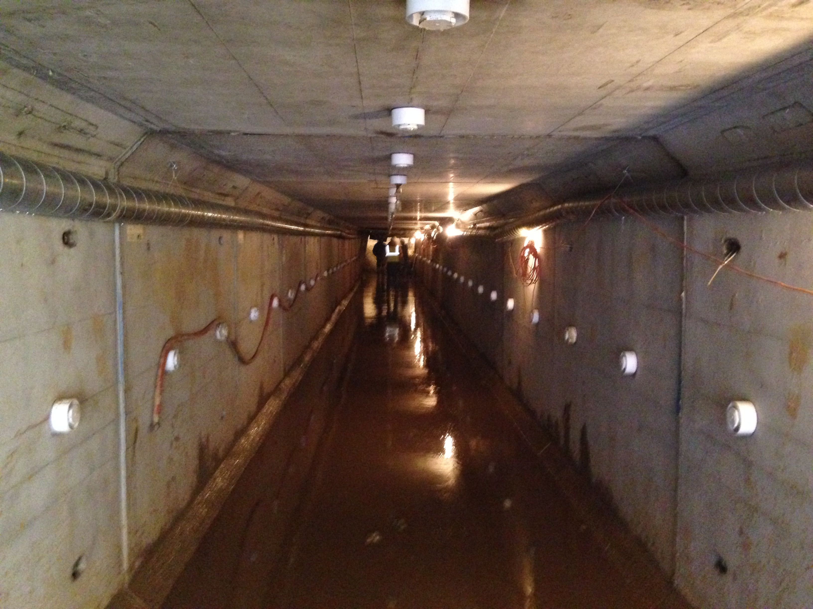
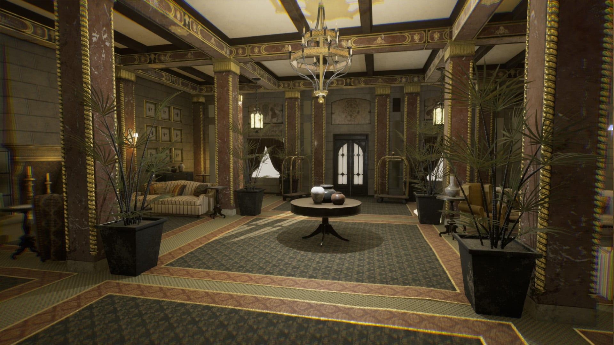

Welcome to the backrooms
You've been here before ...
The Backrooms is an internet "urban legend" containing a seemingly endless network of liminal spaces that are interconnected by a maze of indistinguishable hallways. They exist as an alternate reality, accessible through glitches in reality or through certain portals, such as a malfunctioning VR headset or a hidden door in an office building.
The legend has gained popularity through various online forums and social media platforms, with many people sharing their own experiences or theories about the Backrooms. The unsettling and surreal nature of the legend has captured the imagination of many, leading to the creation of art, stories, and even video games inspired by the concept.
Level 0

Backrooms level 0 is considered the starting point of the Backrooms. It is described as a relatively benign level compared to the other, more dangerous levels that are said to exist within the Backrooms. Level 0 is characterized by yellowish-tan walls, beige carpets, and fluorescent lights. The rooms and hallways are often long and featureless, with no windows or doors leading anywhere.
Level 0 has a feeling of emptiness and loneliness, with the hum of fluorescent lights being the only sound that can be heard. There are no entities or creatures present on this level, and there is no sense of danger. However, the level is impossible to escape, with the same rooms and hallways appearing to repeat endlessly.
While level 0 may seem relatively harmless, it is unsettling and unnerving due to its monotony and the feeling of being trapped. Those who have claimed to have been to the Backrooms describe level 0 as a sort of limbo or purgatory, a place where one can easily become lost and lose their sense of time and reality.
Entities
None
Level 1

Backrooms level 1 is the first level beyond the starting point of level 0. It is often described as significantly more dangerous and unsettling than level 0, with a greater sense of malevolence and unease.
Level 1 is characterized by decaying, yellowed walls, rusted pipes, and flickering lights. The rooms and hallways are maze-like, with many dead ends and confusing twists and turns. The air is often filled with a musty, moldy smell, and strange noises can be heard in the distance.
Entities and creatures are said to be present on level 1, including monsters with distorted features and humanoid figures with unnatural movements. These entities can appear suddenly and attack the traveler, often without warning or reason. Additionally, there are reports of anomalies on level 1, such as rooms that appear to be much larger on the inside than on the outside or rooms with strange, otherworldly properties.
Navigating level 1 is challenging and dangerous, and those who find themselves trapped on this level are advised to avoid drawing attention to themselves and to proceed with caution. It is said that escaping level 1 is possible, but it requires a great deal of skill, luck, and determination.
Entities
Duller
Skin stealer
Hounds
Adult facelings
Scratchers
Level 2

Backrooms level 2 is another level of the Backrooms that is described as being more dangerous than level 1 but less chaotic than level 3. It is characterized by a claustrophobic and maze-like environment, with narrow hallways and low ceilings.
The walls on level 2 are often described as being made of a yellowish-green material, with stains and mold covering the surface. The lighting is dim, and the air is filled with a damp, musty smell. The rooms and hallways on this level are often featureless, with no windows or doors leading anywhere.
Entities on level 2 are said to be more numerous and varied than those on level 1, with a mix of humanoid and animal-like creatures that are often hostile towards travelers. Some entities on level 2 are described as being able to blend into the environment, making them difficult to spot until it is too late.
One notable feature of level 2 is the presence of staircases that lead both up and down, seemingly endless in their descent or ascent. Travelers who attempt to climb these stairs often report feeling disoriented or dizzy, and those who descend too far risk encountering even more dangerous levels of the Backrooms.
Overall, level 2 is considered a difficult and dangerous level to navigate, with travelers advised to proceed with caution and to avoid lingering in one place for too long.
Entities
Facelings
Hounds
Smilers
Scratchers
Level 3
It's worth noting that there are different versions of the Backrooms with varying levels and descriptions, and level 3 may differ depending on the source. However, in general, Backrooms level 3 is considered one of the most dangerous levels of the Backrooms, often described as a nightmare realm that is difficult to escape from.
Level 3 is said to be a chaotic and twisted version of reality, with walls that shift and change shape and floors that are covered in a sticky, black substance. The air is thick with a putrid odor, and the sound of screams and howls can be heard throughout the level. The lighting is dim and flickering, making it difficult to see.
Entities and creatures on level 3 are said to be more aggressive and powerful than those on previous levels. These creatures are often described as twisted and deformed versions of familiar animals or humanoid figures with grotesque and distorted features. They can attack and pursue travelers relentlessly, making it difficult to navigate and survive on this level.
Escape from level 3 is said to be extremely difficult, with many travelers reporting that the level seems to shift and change around them, making it difficult to find a way out. Some have described level 3 as a sort of purgatory or hell, a place where the traveler is trapped forever. Those who find themselves on level 3 are advised to proceed with extreme caution and to avoid drawing attention to themselves if possible.
Entities
Facelings
Hounds
Wretches
Deathmoths
Skin-stealers
Dullers
Smilers
Clumps
Bursters
Level 4

Backrooms level 4 is one of the deepest and most dangerous levels of the Backrooms. It is characterized by an eerie, red-tinted lighting and walls that are covered in a pulsating, fleshy substance. The floors are often slick with an unknown liquid, making it difficult to maintain balance and navigate the level.
Entities on level 4 are said to be extremely hostile and dangerous, with many described as being completely unlike any known living creature. Some entities on this level are said to be able to manipulate the flesh-like walls and floors, further complicating navigation and escape attempts.
The environment on level 4 is constantly shifting and changing, with rooms and hallways appearing and disappearing without warning. Travelers on this level often report feeling disoriented and lost, with the sense that they are being watched or hunted by unseen forces.
Escaping level 4 is said to be extremely difficult, with many travelers reporting that they were trapped on the level for extended periods of time before finding a way out. The level is often described as a sort of hellish realm, with the traveler trapped in a nightmarish landscape that is impossible to escape from.
Due to the extreme danger and difficulty of navigating level 4, travelers are advised to avoid this level if possible and to proceed with extreme caution if they find themselves on it.
Entities
Partygoers
Insanities
Dullers
Smilers
Facelings
Boiled
Level 5
Backrooms level 5 is considered by many to be the deepest and most dangerous level of the Backrooms. It is a realm of absolute darkness, with no light sources and no visible walls, floors, or ceilings. The only sense of direction comes from a constant hum that seems to emanate from all around the traveler.
Entities on level 5 are said to be even more dangerous and hostile than those on previous levels, with many described as being completely unlike anything seen in the known world. The darkness itself is also said to be alive and capable of harming the traveler, with reports of travelers being dragged into the void and never seen again.
Navigation on level 5 is nearly impossible, with travelers often getting lost and disoriented within seconds of entering the level. It is said that even experienced travelers who have successfully navigated the previous levels of the Backrooms are unable to make any headway on level 5.
Escape from level 5 is considered nearly impossible, with very few reports of successful escape attempts. Those who find themselves on this level are advised to avoid moving and to remain as still as possible in the hopes of avoiding detection by the entities and darkness that populate the level.
Overall, Backrooms level 5 is considered a nightmarish and inhospitable realm that is to be avoided at all costs. Those who have experienced the level describe it as a place of absolute horror and despair, where the traveler is truly alone in the darkness.